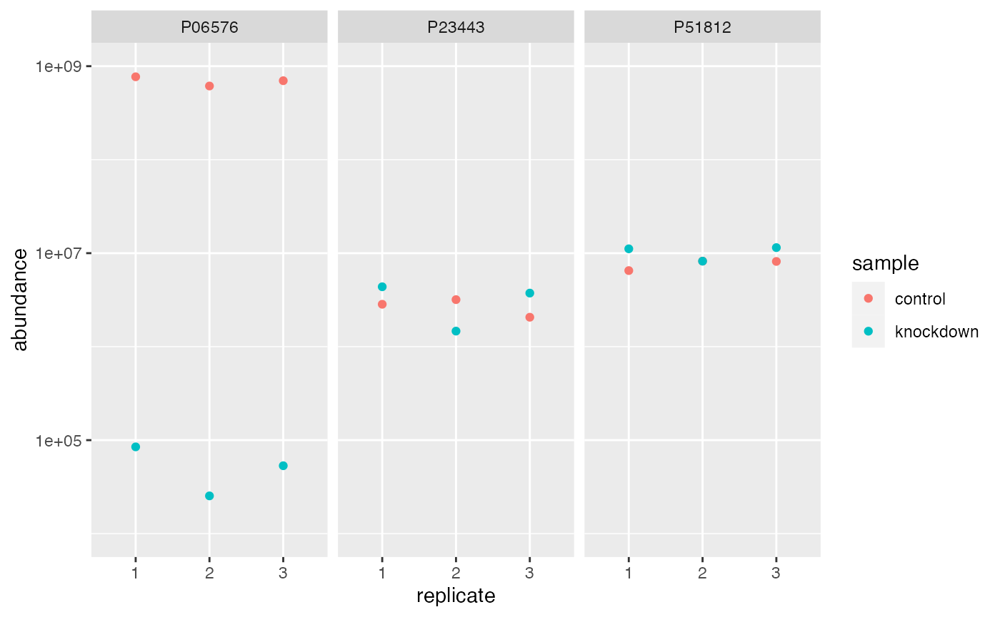

Imputing
imputing.RmdAlong with normalization, imputing missing values is another
important task in quantitative proteomics that can be challenging to
implement given the desired method. Again, tidyproteomics attempts to
facilitate this with the impute() function, which currently
can support any base level or user defined function along with
implementing the R package missForest, widely regarded as one
of the best algorithms for missing value imputation. Note that this
method is a between sample imputation.
While random forest algorithms have shown superiority in imputation and regression, that does not portend their use in every case. For example, imputing missing values from a knock-out experiment, such as the dataset included in this package, are preferrable to minimum value imputation over the more complex random forest, simply because in this experiment we know how the experiment is affected.
Imputation currently supports the following methods calculated either within or between samples:
| Function | Method | Description |
|---|---|---|
| base::min | within or between | the minimum value in any given set |
| stats::median | within or between | the minimum value in any given set |
| user supplied function | within or between | e.g. function (x, na.rm) { quantile(x, 0.05, na.rm = na.rm)[1] } |
| “randomforest” | between only | a non-linear random forest implementation of missForest |
Imputing
# path_to_package_data() loads data specific to this package
# for your project load local data
# example:
# your_proteins <- "./data/your_exported_results.xlsx" %>%
# import("ProteomeDiscoverer", "proteins")
rdata <- path_to_package_data("pd_ecoli-hint_proteins.xlsx") %>%
import("ProteomeDiscoverer", "proteins")Using within
Note the difference using within ..
rdata %>%
impute(impute_function = base::min, method = 'within') %>%
subset(protein %like% "P05706|P0A8R4|P0A9K1|P0AAJ8|P0ACE7|P18776|P24252|P31826|P32674") %>%
extract() %>%
ggplot(aes(replicate, abundance)) +
geom_point(aes(color=sample)) +
facet_wrap(~identifier) +
scale_y_log10()
Using between
.. as opposed to between. The between method can be considered to contain the bias of any real offset, note our protein P0ACE7 (i.e hinT), shows the expected offset for the within method, and does not for the between method. Consider only using between methods when imputing values you suspect are missing-at-random. In our case P0ACE7 (i.e hinT) is missing-not-at-random, because we performed a genetic knockout mutation.
rdata %>%
impute(impute_function = base::min, method = 'between') %>%
subset(protein %like% "P05706|P0A8R4|P0A9K1|P0AAJ8|P0ACE7|P18776|P24252|P31826|P32674") %>%
extract() %>%
ggplot(aes(replicate, abundance)) +
geom_point(aes(color=sample)) +
facet_wrap(~identifier) +
scale_y_log10()